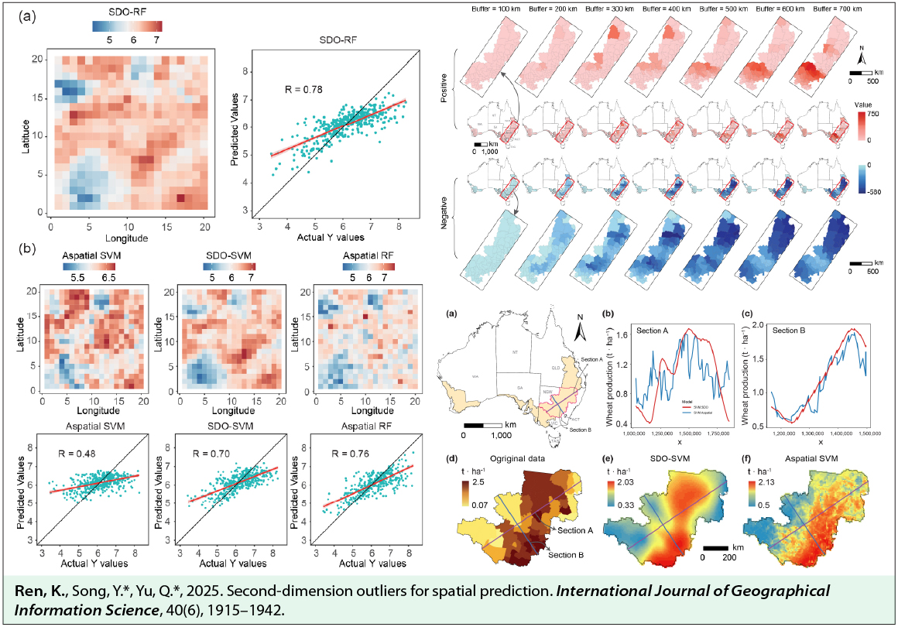
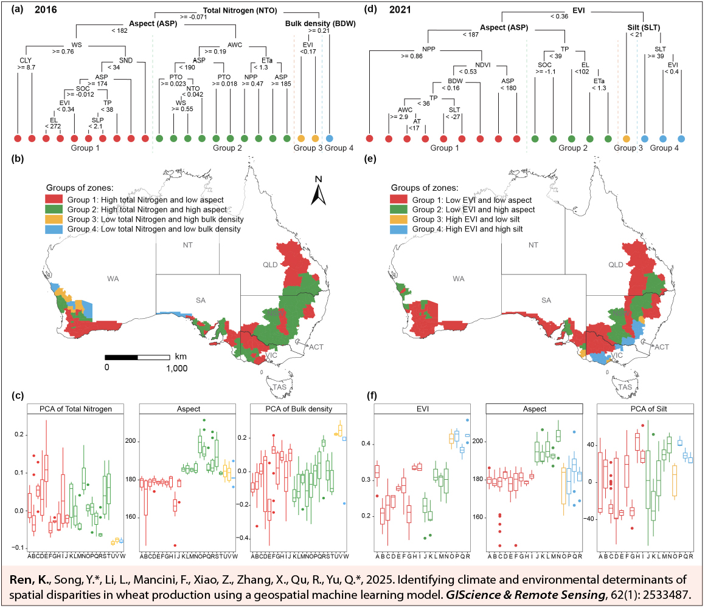

Publication News
Two 2025 Papers in IJGIS and GIScience & Remote SensingGRS
A publication note on two 2025 papers in CAS Zone 1 Top journals: IJGIS and GIScience & Remote Sensing.GRS.

Second-dimension outliers for spatial prediction
Introduces second-dimension outliers (SDO) to capture local spatial anomaly context and improve wheat-production prediction across Australia.
Ren, K., Song, Y.*, Yu, Q.*, 2025. Second-dimension outliers for spatial prediction. International Journal of Geographical Information Science, 40(6), 1915–1942.

Identifying climate and environmental determinants of spatial disparities in wheat production using a geospatial machine learning model
Combines hotspot detection, GOZH, and machine learning to identify the climate, environmental, and soil controls behind spatial disparities in Australian wheat production.
Ren, K., Song, Y.*, Li, L., Mancini, F., Xiao, Z., Zhang, X., Qu, R., Yu, Q.*, 2025. Identifying climate and environmental determinants of spatial disparities in wheat production using a geospatial machine learning model. GIScience & Remote Sensing, 62(1), 2533487.
